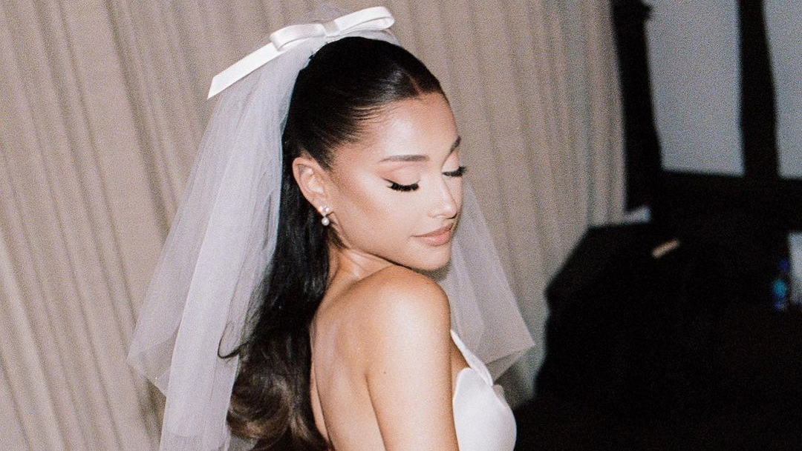
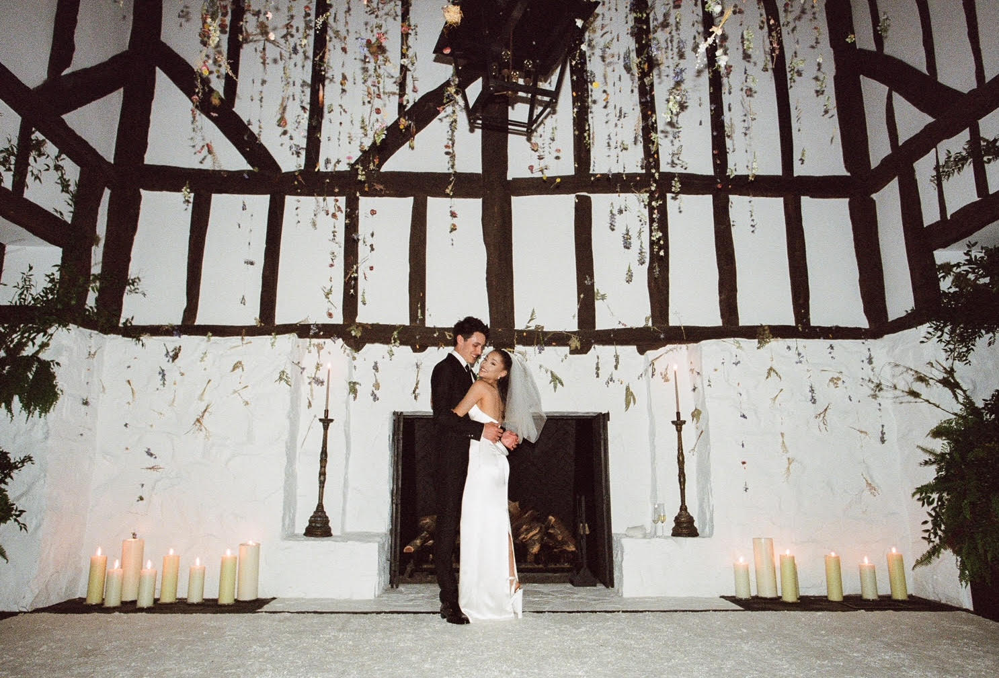

личная жизнь
Артистка полностью сосредоточена на развитии карьеры, которая находится на взлете. Но личная жизнь Арианы Гранде тоже не стоит на месте. в конце лета 2016 года рядом с Арианой появился популярный американский рэпер Мак Миллер. Пара встречалась на протяжении двух лет, после чего артисты объявили о расставании. Это событие сыграло роковую роль в жизни бывшего бойфренда певицы: он не смог справиться с зависимостью и вновь стал употреблять наркотики. От передозировки у Миллера остановилось сердце. К этому времени у Гранде стремительно развивался роман с солистом S.N.L. Питом Дэвидсоном, который не стал тянуть с предложением и уже спустя 2 месяца знакомства сделал своей избраннице предложение, но внезапно девушка отменила мероприятие без объяснения причин. В 2020 году стало известно, что новым парнем звезды стал элитный риелтор из Лос-Анджелеса по имени Далтон Гомес. Папарацци застали пару целующейся в одном из калифорнийских кафе. В мае 2021-го стало известно, что влюбленные поженились. Свадьба прошла тайно, в доме певицы. Всего присутствовало 20 гостей, среди них – родители новобрачных.
 